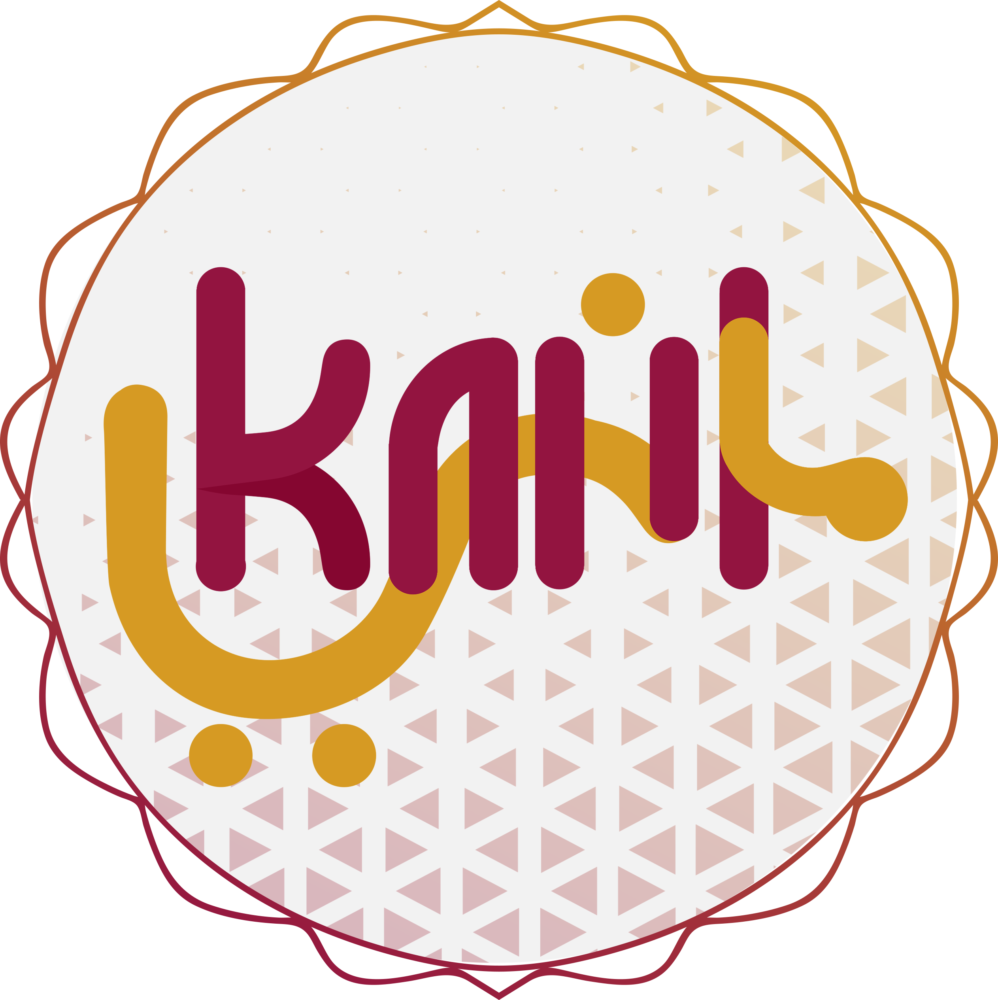

<ion-view hide-nav-bar="true">
  <ion-nav-bar class="theme-color">
<ion-nav-title ></ion-nav-title>
    <ion-nav-buttons side="right">
      <button class="theme-color button button-clear icon-left ion-checkmark-round"
              ng-click="saveUserSetting()"
              style="padding-right:7px;">

      </button>
    </ion-nav-buttons>
  </ion-nav-bar>


    
     

  <ion-content class="ionBody" style="padding-bottom:100px;">
   
      
        <div class="container header-index">
  
  	<div class="logo ">
    
    	
        
  	</div><!----logo--->
  		  
          
  </div><!---container-logo-----> 
      
      

      
      <!-----lange----->
 


    <br><br><br><br>
  </ion-content>

</ion-view>
